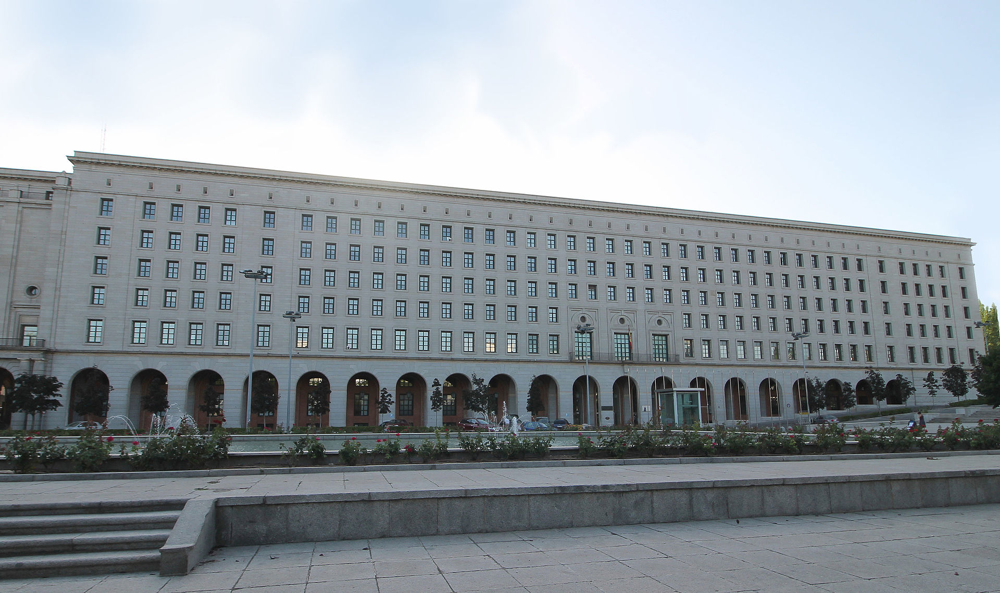

Tudo sobre La casa de papel
La Casa de Papel é uma série de televisão de drama policial espanhola criada por Álex Pina. A trama traça dois assaltos muito preparados liderados por um homem conhecido como O Professor (Álvaro Morte), um na Casa da Moeda Real da Espanha e outro no Banco Central da Espanha. A série foi inicialmente planejada como uma minissérie de 15 episódios dividida em duas partes, a primeira com nove episódios e a segunda com seis. Teve exibição original na rede espanhola Antena 3 entre 2 de maio de 2017 a 23 de novembro do mesmo ano. La casa de papel conta com Úrsula Corberó, Álvaro Morte, Itziar Ituño, Pedro Alonso, Alba Flores, Miguel Herrán e Jaime Lorente no elenco principal.
Sinopse
A narrativa da série gira em torno de um assalto de vários dias preparado contra a Casa da Moeda Real, localizada na cidade de Madrid, na Espanha. Um homem misterioso, conhecido como "O Professor", tinha por objetivo realizar o maior assalto da história. Para executar esse plano ambicioso, recrutou uma equipe formada por oito pessoas com habilidades específicas em suas áreas de atuação, e que por suas histórias pessoais, não teriam nada a perder. O plano previa invadir o local e imprimir 2,4 bilhões de euros. Para isso alcançar tal façanha, os assaltantes precisariam passar 11 dias dentro da Casa da Moeda, e nesse período, além das atribuições relacionadas à produção das cédulas, também precisariam lidar com as forças policiais de elite e 67 reféns.
Produção
Roteiro e escrita
A série foi criada pelo roteirista Álex Pina e pelo diretor Jesús Colmenar durante seus anos de colaboração desde 2008. Depois de terminar seu trabalho no drama de prisão espanhol Vis a vis, eles deixaram a Globomedia para abrir sua própria produtora, chamada Vancouver Media, em 2016. Para seu primeiro projeto, eles consideraram filmar uma comédia ou desenvolver uma história de roubo para a televisão, com o último nunca tendo sido tentado antes na televisão espanhola. Junto com ex-colegas do Vis a vis, eles desenvolveram La casa de papel como um projeto para tentar coisas novas sem interferência externa. Pina estava firme em fazer uma série limitada.
Escolha do elenco
A escolha de atores ocorreu no final de 2016, durando mais de dois meses. Os personagens não estavam totalmente definidos no início deste processo e tomaram forma com base na atuação dos atores. Os diretores de elenco Eva Leira e Yolanda Serrano estavam procurando atores com a habilidade de interpretar ladrões empáticos com amor crível e conexões familiares. A Antena 3 anunciou o elenco em março de 2017 e lançou trechos de audição da maioria dos atores do elenco no aftershow da série Tercer Grado e em seu site.
O Professor foi criado como um vilão carismático, mas tímido, que poderia convencer os ladrões a segui-lo e fazer o público simpático à resistência dos ladrões contra os bancos poderosos. No entanto, desenvolver o papel do Professor se mostrou difícil, já que o personagem não seguia as convenções arquetípicas e os produtores não tinham certeza sobre seu grau de importância. Enquanto os produtores desenvolviam sua personalidade como "Salva", eles estavam originalmente procurando por um tipo de professor de Harvard de 50 anos com a aparência do ator espanhol José Coronado. O papel foi proposto a Javier Gutiérrez, mas ele já estava comprometido em estrelar o filme Campeones. Enquanto isso, os diretores de elenco defendiam Álvaro Morte, a quem conheciam de sua colaboração na longa novela espanhola El secreto de Puente Viejo, embora sua experiência na televisão no horário nobre fosse limitada naquele momento. Passando por todo o processo de casting e abordando o papel por meio de análises externas e não da experiência pessoal, Morte descreveu o professor como "uma tremenda caixa de surpresas" que "acabam moldando esse personagem porque ele nunca para de gerar incertezas", tornando-o pouco claro para o público se o personagem é bom ou ruim. Os produtores também descobriram que sua aparência de professor de escola primária deu ao personagem mais credibilidade.
Filmagens
As partes 1 e 2 foram filmadas consecutivamente na região da grande Madrid de janeiro a agosto de 2017. O episódio piloto foi gravado em 26 dias, enquanto todos os outros episódios tiveram cerca de 14 dias de filmagem. A produção foi dividida em duas unidades para economizar tempo, com uma unidade filmando cenas envolvendo o professor e a polícia, e a outra filmando cenas com os ladrões. O enredo principal se passa na Casa da Moeda da Espanha em Madrid, mas as cenas externas foram filmadas na sede do Conselho Superior de Investigações Científicas (CSIC) por sua semelhança com a Casa da Moeda, e no telhado da Escola Técnica Superior de Engenheiros Aeronáuticos, parte da Universidade Politécnica de Madrid. A propriedade de caça onde os ladrões planejam seu golpe foi filmada na fazenda Finca El Gasco em Torrelodones. As filmagens internas ocorreram nos antigos sets de Vis a vis em Colmenar Viejo[19] e no jornal diário nacional espanhol ABC em Torrejón de Ardoz para cenas na imprensa. Como o show foi projetado como uma série limitada, todos os sets foram destruídos assim que a produção da parte 2 terminou.

Música
A música tema da série, "My Life Is Going On", foi composta por Manel Santisteban, que também atuou como compositor em Vis a vis. Santisteban entrou em contado a cantora espanhola Cecilia Krull para co-escrever e interpretar as letras, que falam sobre ter confiança nas próprias habilidades e no futuro.[58] A música-tema é tocada atrás na sequência de abertura com modelos de papel das principais configurações da série.[58] A principal fonte de inspiração de Krull foi a personagem Tokio no primeiro episódio da série, quando o Professor lhe oferece uma saída para um momento de desespero.[59] As letras são em inglês como o idioma natural de Krull no momento da escrita.[59]
A canção italiana antifascista "Bella ciao" toca várias vezes ao longo da série e acompanha duas cenas-chave emblemáticas: No final da primeira parte, o Professor e Berlim cantam em preparação para o roubo, abraçando-se como resistência contra o estabelecimento,[60] e na segunda parte que desempenha durante a fuga dos ladrões da Casa da Moeda, como uma metáfora para a liberdade. Sobre o uso da música, Tokio relata em uma de suas narrações: "A vida do Professor girava em torno de uma única ideia: Resistência. Seu avô, que lutou contra os fascistas na Itália, ensinou-lhe a música e ele nos ensinou". A canção foi levada ao show pelo escritor Javier Gómez Santander. Ele tinha ouvido "Bella ciao" em casa para animá-lo, já que ficou frustrado por não encontrar uma música adequada para o meio da parte 1. Ele estava ciente do significado e da história da música e sentiu que representava valores positivos. "Bella ciao" se tornou um hit de verão na Europa em 2018, principalmente devido à popularidade da série e não aos temas graves da música.
Referências
- Rosado, Juan Carlos (19 de julho de 2019). «'La casa de papel': ocho artículos que hay que leer en el estreno de la tercera parte». El País (em espanhol). Consultado em 30 de julho de 2019
- Rosado, Juan Carlos (1 de maio de 2017). «Antena 3 convierte un robo en una serie en 'La casa de papel'». elperiodico (em espanhol). Consultado em 23 de setembro de 2018
- Tartaglione, Nancy (18 de abril de 2018). «'Money Heist': Netflix Confirms Season 3 Of Spanish-Language Phenomenon». Deadline.com. Consultado em 18 de abril de 2018
- Abigail P. (13 de abril de 2020). «"Money Heist: The Phenomenon" Explores the World of the Popular Series». Enternminet Forus (em inglês). Consultado em 9 de novembro de 2020
- Wagner Wakka (31 de Julho de 2020). «La Casa de Papel: Netflix confirma que Parte 5 será a última da série». Canal Tech. Consultado em 9 de novembro de 2020
- Romero, Marta A. (17 de junho de 2019). «'La casa de papel' nos abre sus puertas: te contamos cómo se ha rodado la tercera temporada con Netflix» (em espanhol). sensacine.com. Consultado em 18 de setembro de 2019. Cópia arquivada em 21 de agosto de 2019
- Marafon, Renato (6 de janeiro de 2018). «Crítica | La Casa de Papel Série de assalto da Netflix é SENSACIONAL | CinePOP». cinepop. Consultado em 24 de setembro de 2018
- Gonzaga, Rafael (30 de janeiro de 2018). «La Casa de Papel - 1ª parte | Crítica». Omelete. Consultado em 23 de setembro de 2018
- Budowski, Jade (20 de dezembro de 2017). «Netflix's 'La Casa de Papel' Is A Top-Notch Spanish Heist Thriller That Keeps You Guessing». Decider (em inglês). Consultado em 23 de setembro de 2018
- «TecMundo - Descubra e aprenda tudo sobre tecnologia». www.tecmundo.com.br. Consultado em 11 de setembro de 2022
- Canaltech. «Canaltech - Tecnologia para quem entende». Canaltech. Consultado em 11 de setembro de 2022